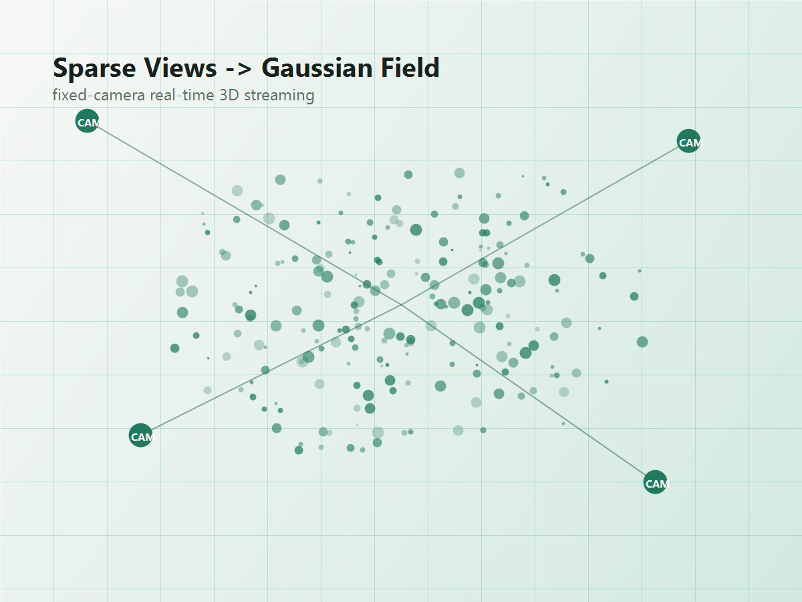

3DV Learning Note
GPS-Gaussian+
学习笔记：
固定机位如何影响
实时三维直播
我关注 GPS-Gaussian+，是因为我希望探索如何利用已有固定摄像头设备，实现更接近实时的三维直播。相比单纯离线重建，我更关心设备条件有限、输入视角不完美时，系统能否稳定、高效地产生可用的三维表示。

1. 为什么从固定摄像头出发
很多三维重建或新视角合成实验会假设我们能围绕目标采集比较完整的多视角数据。但如果目标变成实时三维直播，采集条件就会现实很多：摄像头通常已经安装在教室、实验室或室内空间的少数几个固定位置，机位会受到墙面、供电、网络布线、安装成本和隐私区域等因素限制。
这类场景的吸引力也正在这里。它不要求重新购买复杂设备，而是希望把已有摄像头组织起来，形成一个可以更新、可以渲染、可以从新视角观察的三维表达。问题是，固定机位天然不是为三维重建最优化设计的，所以算法必须面对输入视角不均匀、遮挡区域多、局部细节缺失的问题。
2. Gaussian Splatting 带来的机会
3D Gaussian Splatting 的重要吸引力在于，它把场景表示成一组带有位置、形状、颜色和透明度等属性的三维高斯，并通过适合 GPU 的 splatting 过程进行高质量实时渲染。对实时三维直播来说，这种表示比传统网格或体渲染更容易让人联想到“持续更新的场景状态”。
但是，Gaussian Splatting 并不会自动消除输入视角的限制。高斯的位置、密度和外观仍然依赖观测数据。如果固定摄像头只覆盖了正面和少量侧面，那么背面、桌面遮挡处、人体或物体互相遮挡的位置，就很容易变成表示不稳定的区域。
3. 我理解的相机机位局限性
我理解的相机机位局限性，主要来自固定摄像头场景中的视角覆盖不均。比如在教室、实验室或室内空间中，摄像头通常被安装在少数几个固定位置，输入和论文实验中常见的密集、多角度采集不同：它可能在某些方向有稳定观测，但在侧面、背面、遮挡区域或局部细节上缺少足够视角。
对 Gaussian Splatting 这类依赖多视角观测来优化三维表示的方法来说，固定机位会影响 Gaussian 的初始化、密度分布、遮挡区域补全和新视角合成质量。如果某个区域长期没有被任何相机看到，方法不可能凭空恢复真实几何；如果某些视角的位姿估计有误，错误也可能被写入三维表示。
对实时三维直播而言，这个问题会进一步放大。系统不能依赖长时间离线训练，也不能要求用户反复移动设备补充视角，而是需要在有限固定视角下快速更新场景表示。这让我觉得，固定机位不是一个可以忽略的输入条件，而应该成为算法设计时被显式考虑的约束。
4. 从 GPS-Gaussian+ 得到的启发
GPS-Gaussian+ 的论文题目是 Generalizable Pixel-wise 3D Gaussian Splatting for Real-time Human-Scene Rendering from Sparse Views。仅从这个任务设定就可以看到，它关心的是 sparse views 和 real-time rendering，而不是在理想采集条件下做完全离线的单场景优化。
我对它的理解是：这类方法的价值不只是“把渲染效果做得更好”，也在于把问题推进到更接近实际部署的输入条件。固定摄像头三维直播和 sparse-view human-scene rendering 并不完全等价，但二者共享一个关键困难：观测不完整时，系统如何仍然构建足够稳定的三维表示，并让新视角结果看起来可信。
这给我的启发是，后续如果要面向已有设备做实时三维直播，不能只看渲染速度，还要同时关注机位分布、每个视角的信息量、位姿可靠性和局部更新策略。否则系统可能在正面视角看起来不错，一旦切换到新的观察角度，就暴露出遮挡区域和视角缺口。
5. 目前遇到的问题
目前真正落到已有设备时，我遇到的一个关键问题是：我们已有的相机系统和官方方法中的实验设定存在不匹配，并不完全一致。官方示例通常会默认比较理想的视角组织、标定流程和数据格式，而实际固定摄像头系统会受到设备型号、同步方式、标定精度、分辨率、机位数量和场地结构的限制。
这意味着不能简单地把官方流程直接搬到现有系统上。即使渲染框架本身可以运行，输入数据的视角分布、相机参数和动态场景变化也可能让重建结果不稳定。因此后续需要进一步优化算法和工程流程，例如重新设计相机参数适配方式、增强位姿校正、针对固定机位做局部更新策略，并让方法更能容忍真实设备带来的不规则输入。
6. 可能的优化方向
视角权重分配
不同摄像头对不同空间区域的贡献不应完全相同。可以根据可见性、视角夹角、距离和遮挡情况，为局部区域分配更合理的观测权重。
摄像头布局评估
在设备安装前，可以用覆盖率、重叠视野和盲区比例评估机位。如果设备已经固定，也可以反过来估计哪些区域最容易产生重建不稳定。
位姿校正
固定机位并不代表位姿永远准确。长期使用中摄像头可能发生轻微偏移，因此需要结合图像观测或场景约束做持续校正。
局部增量更新
实时直播不适合每一帧都从头优化。更现实的方式是识别发生变化的区域，只对局部高斯表示进行更新。
多源信息补充
如果 RGB 视角不足，可以考虑深度、人体先验、场景先验或时间连续性来补充约束，但也要避免让先验覆盖真实观测。
7. 小结
通过阅读 GPS-Gaussian+ 相关内容，我更明确地意识到：固定机位实时三维直播不是单纯追求更漂亮的重建结果，而是在有限观测条件下尽快得到稳定、可用、可更新的三维表示。相机摆放、视角覆盖和位姿可靠性会直接影响算法上限，因此它们不只是工程部署问题，也应该进入三维表示方法本身的设计视野。